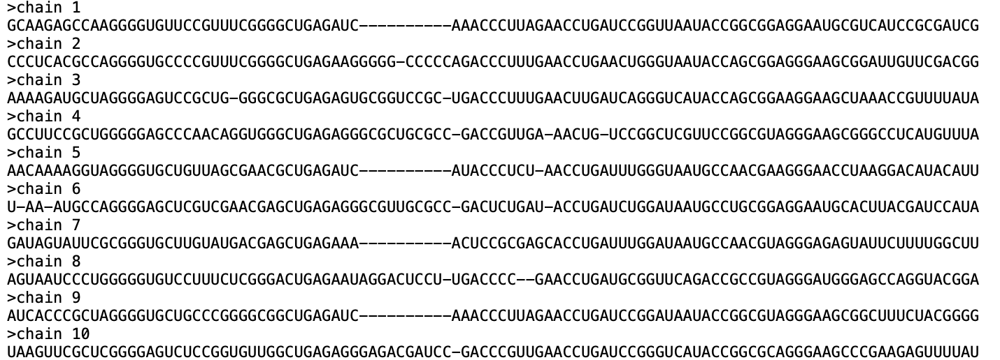

Input data and preprocessing¶
Input data¶
adabmDCA 2.0 takes as input a multiple sequence alignment (MSA) of aligned amino acid or nucleotide sequences, usually forming a protein or RNA family. DCA implementations require the data to be saved in FASTA format @pearson_improved_1988.
adabmDCA 2.0 implements the three default alphabets shown in table Alphabets, but the user can specify an ad-hoc alphabet as far as it is compatible with the input MSA.
protein |
|
rna |
|
dna |
|
An example of a FASTA file format is shown in Figure Example FASTA. In particular, adabmDCA 2.0 correctly handles FASTA files in which line breaks within a sequence are present.
{kind=link}

Example of protein sequences formatted in FASTA format.¶
Preprocessing¶
Preprocessing pipeline¶
The adabmDCA 2.0 code applies the following preprocessing pipeline to
the input MSA:
Remove the sequences having some tokens not included in the default alphabet;
Compute the importance weights for the sequences in the MSA;
Apply a pseudocount to compute the MSA stastistics.
Their precise implementation is described in the following.
Computing the importance weights¶
The sequence weights are computed to mitigate as much as possible the systematic biases in the data, such as correlations due to the phylogeny or over-representation of some regions of the sequence space because of a sequencing bias.
Given an MSA of \(M\) sequences, to compute the importance weight of each sequence \(\pmb a^{(m)}\), \(m=1, \dots, M\), we consider \(N^{(m)}\) as the number of sequences in the dataset having Hamming distance from \(\pmb a^{(m)}\) smaller or equal to \(0.2 \cdot L\) (this threshold can be tuned by the user). Then, the importance weight of \(\pmb{a}^{(m)}\) will be
This reweighting allows us to give less importance to sequences found in very densely populated regions of the sequence space while enhancing the importance of isolated sequences.
Pseudo count and reweighted statistics¶
DCA models are trained to reproduce the one and two-site frequencies of the empirical data. To compute these, we introduce in the computation of the empirical statistics a small parameter \(\alpha\), called pseudo count, that allows us to deal with unobserved (pairs of) symbols in one (or two) column(s) of the MSA. The one and two-site frequencies are given by
where \(f_i^{\mathrm{data}}(a)\) and \(f_{ij}^{\mathrm{data}}(a, b)\) are computed from the MSA as in Eq. (2).